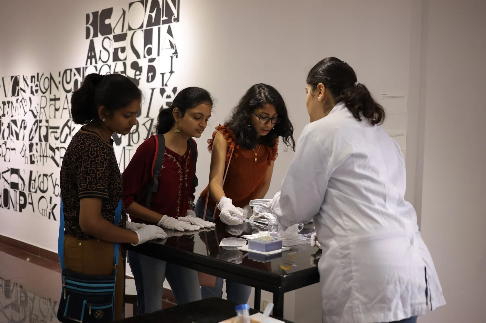
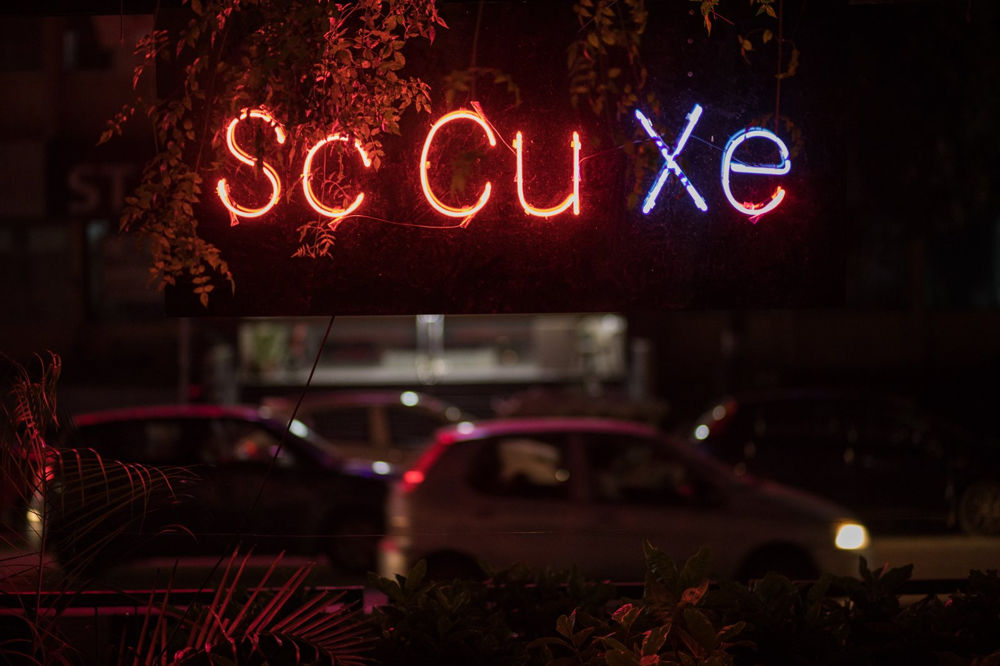
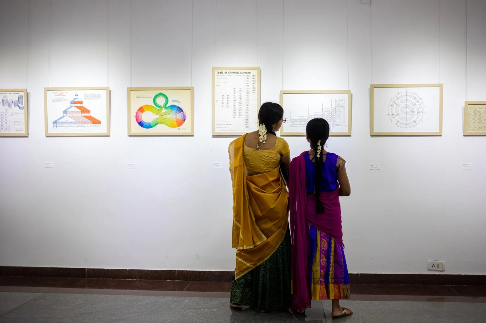
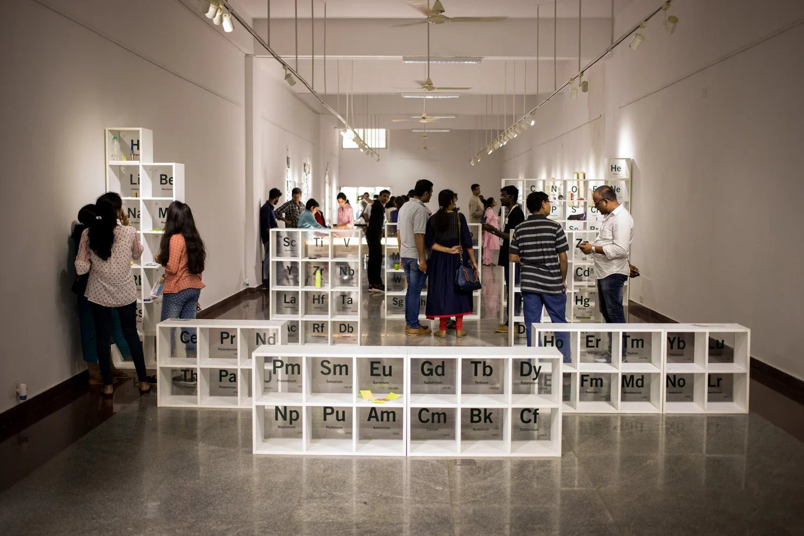
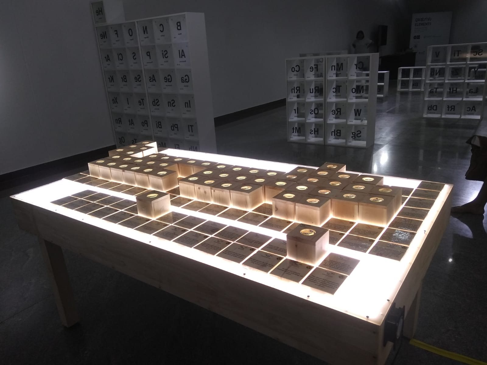
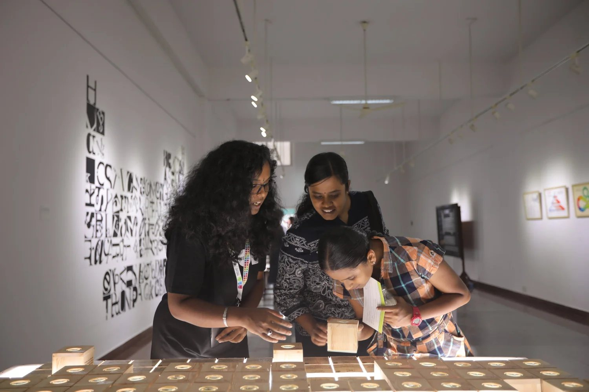
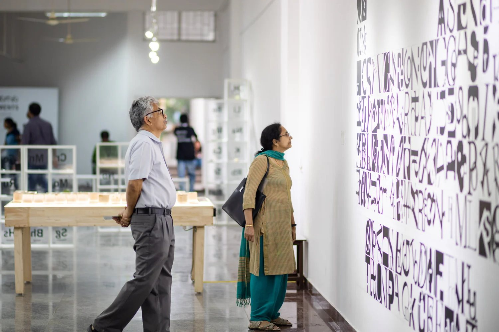
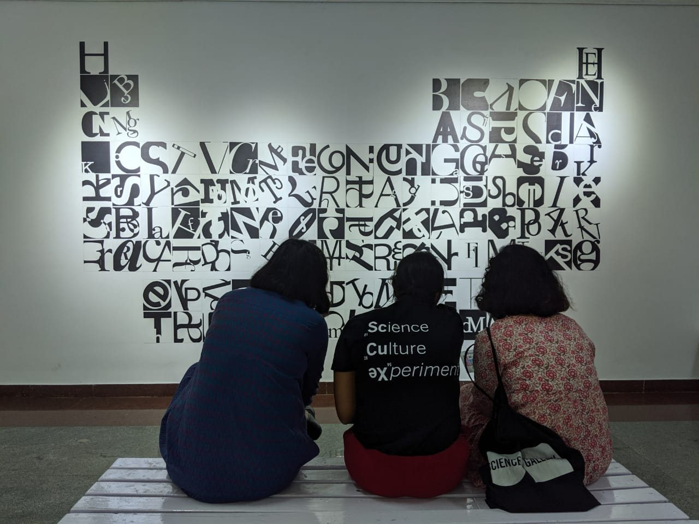

ELEMENTS
A periodic table of experiences.

Through the Looking Glass · JNCASR
- ROLE
- Curation, programming, exhibition design
- WHEN
- 5–11 October 2019
- WHERE
- Rangoli Metro Art Centre, Bengaluru
- MARKING
- International Year of the Periodic Table
My first exhibition for Science Gallery Bengaluru, and my MDes dissertation project at NID.
Organised with the Royal Society of Chemistry and JNCASR, this small pop-up became a template for turning a scientific framework into an experience. A public programme ran every day, from film screenings to live music.
Out of the textbook
Most people last saw the periodic table in a chemistry textbook. ELEMENTS reintroduced it as a fundamental framework for life, making the familiar unfamiliar while asking questions about our exploitative relationship with the elements of the natural world.
It was also my first time working with scientific archives, bringing together historic periodic tables from the Max Planck Institute for the History of Science. With JNCASR researchers, Through the Looking Glass let visitors meet the physical nature of elements both common and rare, while lettering, neon and food turned the table into a cultural object.



Sometimes the best way to understand science is, quite literally, through digestion.
Edible Elements
With Chef Elizabeth Yorke we turned kitchen chemistry into public engagement. Visitors explored elemental combinations through taste and talked with mediators about food chemistry and how processing changes it.

What it set up
ELEMENTS set the foundation for how I make exhibitions: finding unexpected intersections between scientific knowledge and everyday experience.




EXHIBITS & ARTISTS
- 01Bring Your Own ElementScience Gallery Bengaluru
- 02Through the Looking GlassN.S. Vidhyadhiraja, Divya Chalapathi · JNCASR
- 03Tale of the TableScience History Institute
- 04TableauRoyal Society of Chemistry
- 05Testing TableRajendra S Rane
- 06Scripting the TableDavid Mazure
- 07Science Culture ExperimentNeon installation
- 08Reading Nook
TEAM
CREDITS & SUPPORT
Presented by